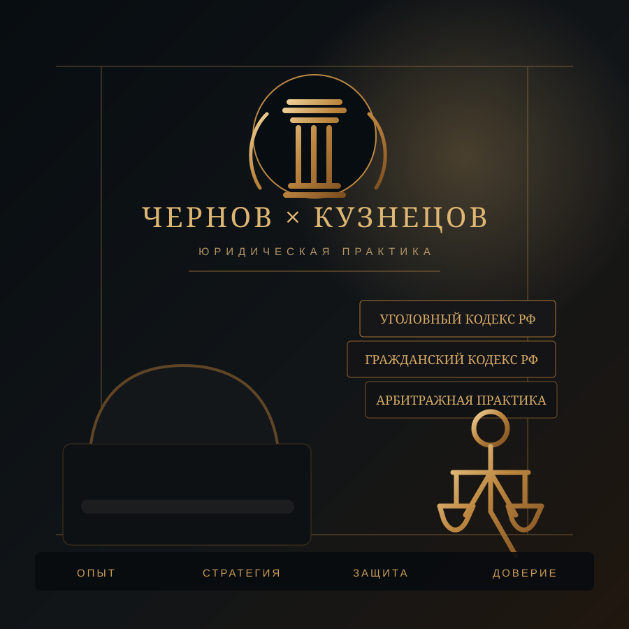

⚖
Уголовная практика
Анализ материалов, стратегия защиты, следственные действия, меры пресечения, обыски и изъятия, возврат имущества, жалобы, суд, апелляция и кассация.
Подробнее → ЧЕРНОВ × КУЗНЕЦОВЮридическая практикаСвязаться
ЧЕРНОВ × КУЗНЕЦОВЮридическая практикаСвязатьсяОПЫТ. СТРАТЕГИЯ. ЗАЩИТА.
Уголовные дела. Защита бизнеса. Гражданские споры.
Комплексная помощь участникам СВО и членам их семей.
Факты. Документы. Сроки. Нормы. Стратегия.

СРОЧНАЯ СИТУАЦИЯ
Выберите событие. Покажем короткий безопасный алгоритм первых действий. Конкретная стратегия определяется после изучения документов.
С ЧЕГО НАЧАТЬ
ОСНОВНЫЕ НАПРАВЛЕНИЯ
Анализ материалов, стратегия защиты, следственные действия, меры пресечения, обыски и изъятия, возврат имущества, жалобы, суд, апелляция и кассация.
Подробнее →Договоры, претензии, взыскание задолженности, арбитраж, корпоративные вопросы и правовой аудит.
Подробнее →Семейные, имущественные, договорные и иные гражданско-правовые вопросы с анализом рисков и процессуальной перспективы.
Подробнее →Выплаты за ранения, ВВК и МСЭ, инвалидность, семьи погибших, пропавшие без вести, пенсии, жильё, НИС и земельные вопросы.
Подробнее →КОМАНДА
Более 12 лет опыта в органах предварительного следствия. Анализ материалов, подготовка правовой позиции и документов, сопровождение в пределах полномочий юриста.
Более 20 лет профессионального опыта. Реестровый номер 23/6643. Удостоверение № 7601 от 12.08.2021. Краснодарская краевая коллегия адвокатов «Юг».
ОТЗЫВЫ О РАБОТЕ
На сайте публикуются только реальные отзывы после согласия клиента и обезличивания чувствительных обстоятельств. Мы не размещаем придуманные цитаты и не раскрываем материалы дел ради рекламы.
Место для подтверждённого отзыва клиента после получения согласия на публикацию и проверки, что текст не раскрывает охраняемую информацию.
Публикуем только обезличенный текст, если клиент отдельно разрешил использовать его отзыв на сайте.
Отзывы добавляются без персональных и коммерчески чувствительных подробностей, если они не нужны для понимания качества работы.
ПЕРВИЧНАЯ ОЦЕНКА
Краткую хронологию, текущую стадию, ближайший процессуальный или иной важный срок и перечень уже имеющихся документов.
Нет. Сначала можно описать ситуацию и согласовать, какие материалы действительно нужны для предметной оценки.
Нет. Мы оцениваем риски и предлагаем последовательность действий, но не обещаем исход.
Сначала — документы и факты. Затем — правовая оценка, риски и последовательность действий.
ПЕРВИЧНОЕ ОБРАЩЕНИЕ
Для первичной оценки достаточно сообщить, что произошло, на какой стадии находится вопрос, ближайший срок и какие документы уже имеются.
Контактыюрист, бывший следователь
+7 918 067-03-60WhatsAppgeo.abuladze01rus@gmail.comадвокат
+7 918 120-21-14WhatsAppkuznetsow_e.p2@mail.ru